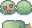

<!--
  scene.html — agent-mutable.
  Day 0 cabin scene. Hand-placed by Evan: a single wooden cabin with chimney
  on a grass meadow, one tree to the side, sprite-based at integer scale.
  Loaded inline into #scene-mount by index.html. Do not include <html>,
  <head>, or <body>.

  All sprites are from Cup Nooble's Sprout Lands Basic pack, either used raw
  from assets/vendor/ or composed in assets/composed/.
-->
<div class="scene scene--exterior">
  <div class="scene__sky"></div>
  <div class="scene__ground"></div>

  

  

  

  
</div>
